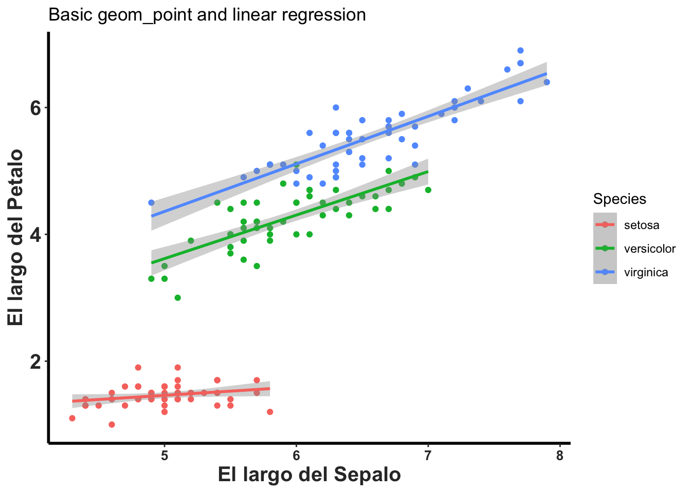
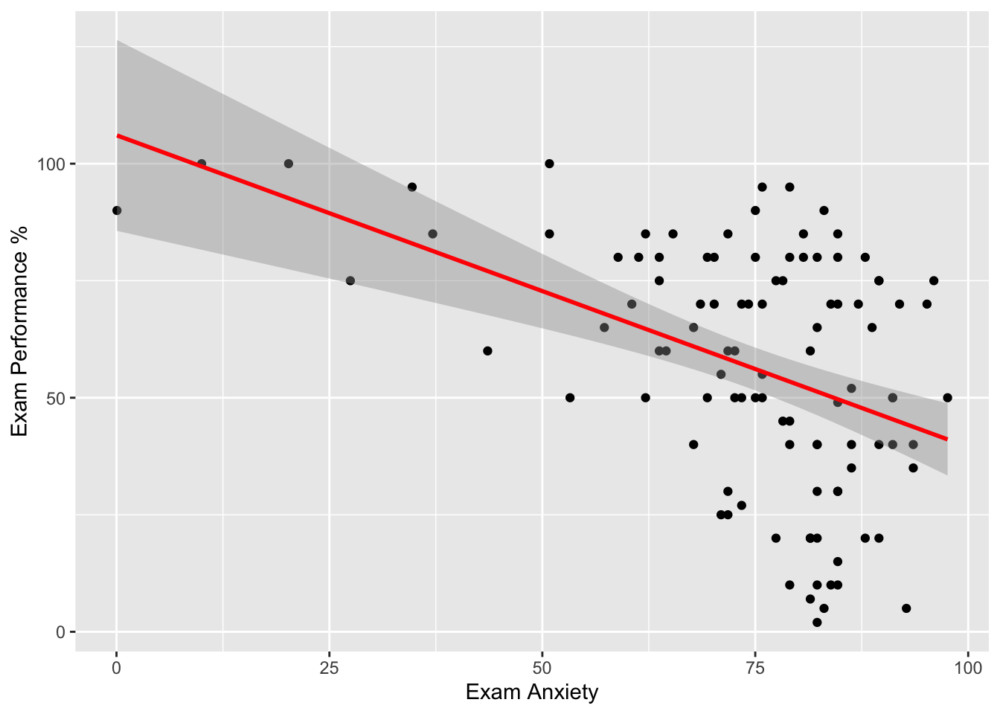
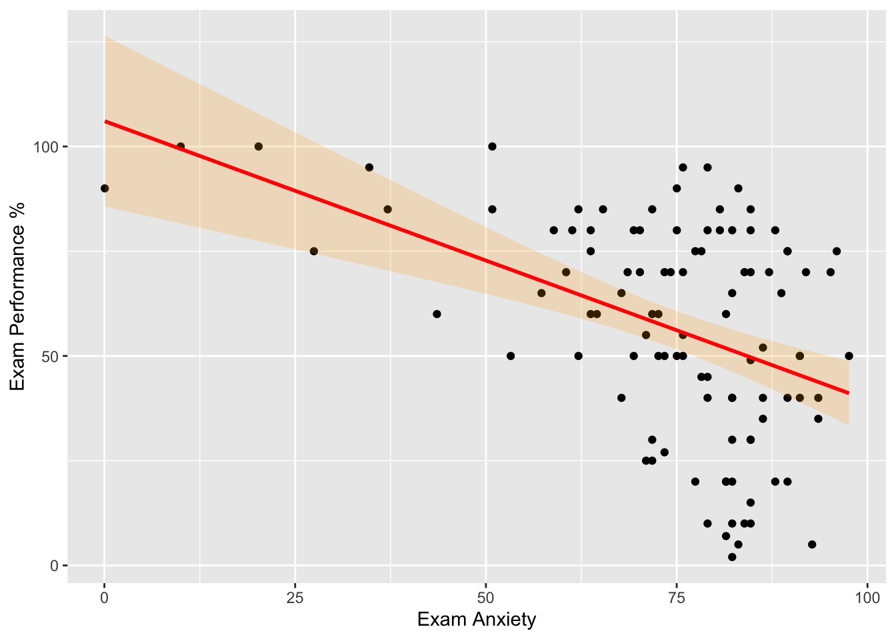
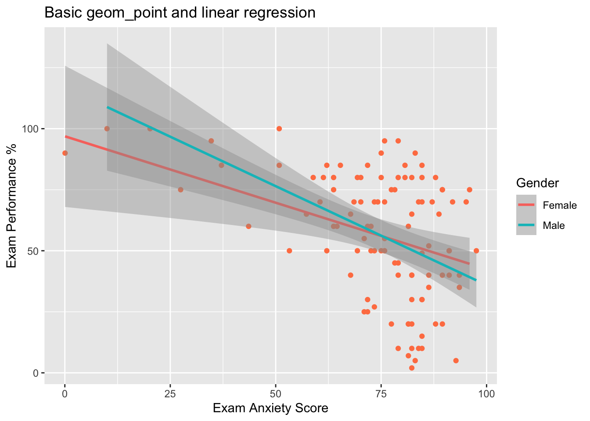
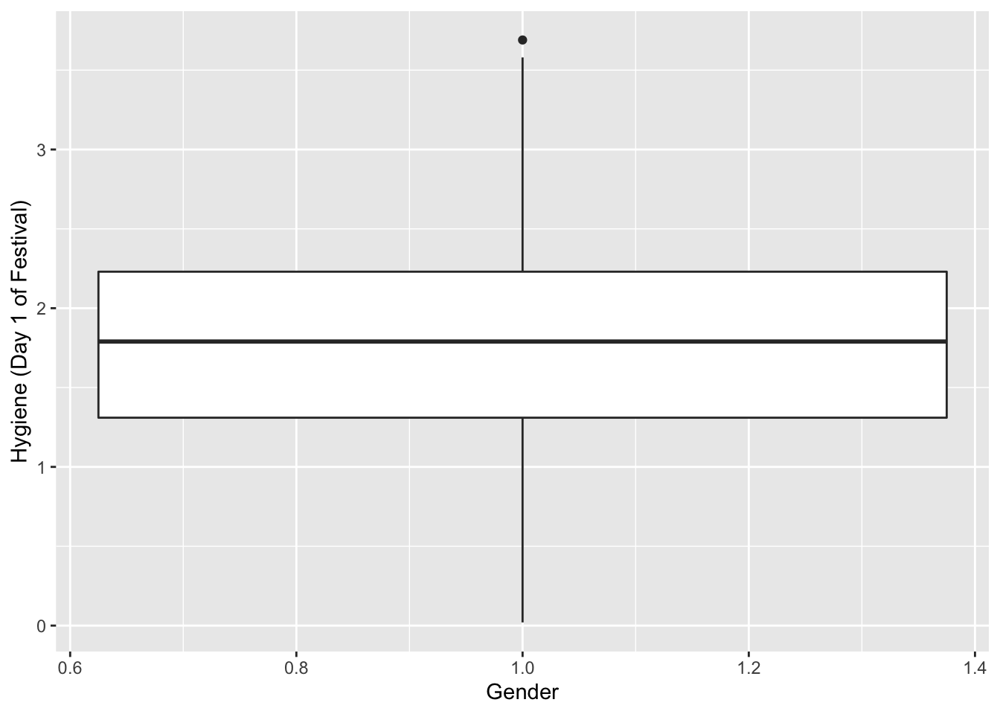
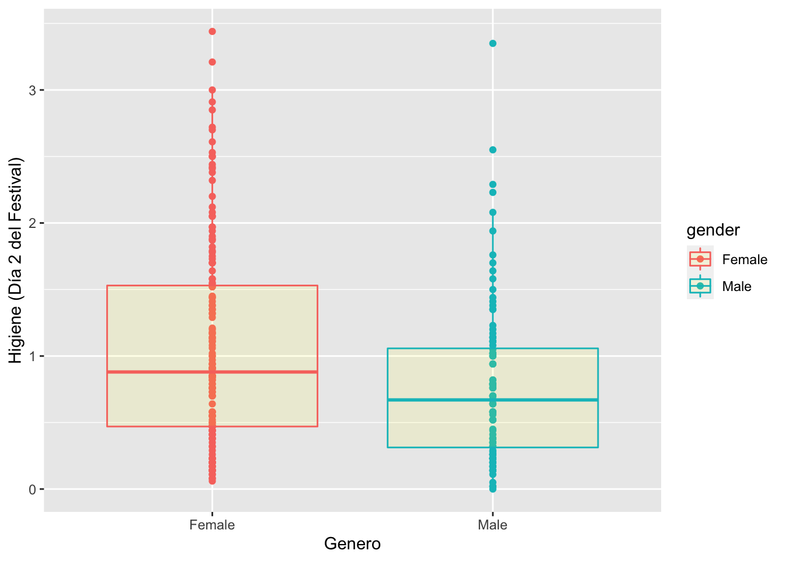
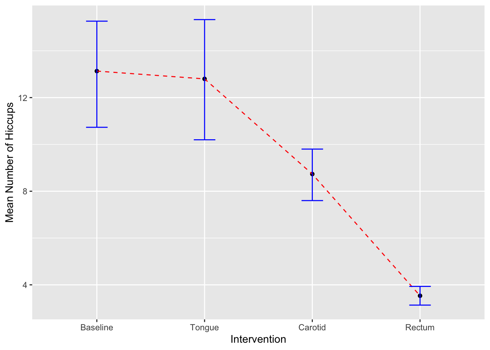
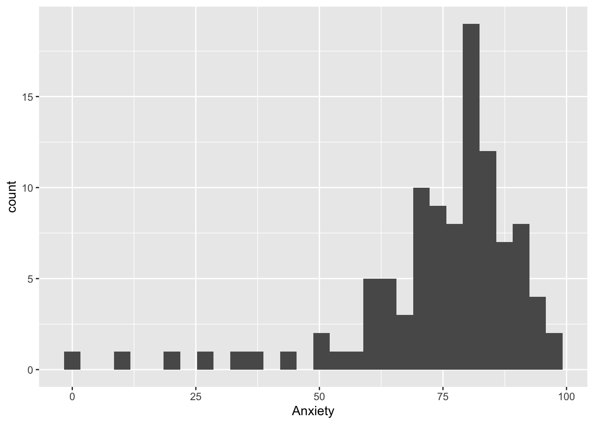

Gráficos con ggplot2
Raymond L. Tremblay
Fecha de la ultima revisión
## [1] "2020-11-14"

Gráficos Básicos con ggplot2
Este modulo es una introducción corta para la visualización de los datos. El paquete principal que se usa es el ggplot2. La visualización de datos es un área especializado y no se podrá hacer justicia al tema al mismo tiempo que se estudia la estadística. Aquí se presenta es una introducción breve del tema. La visualización ayuda a entender los datos ya que la dispersión de ellos impacta que prueba se puede utilizar y el significado de los analisis.
La información utilizada en este documento proviene en parte del libro Discovering Statistics using R por Andy Field, Jeremy Miles y Zoë Field (2014).
Como crear una gráfica de regresión lineal usando ggplot
- Subir los datos “Exam Anxiety” Los archivos de datos que se usan en el libro se encuentran en este enlace, https://studysites.sagepub.com/dsur/study/articles.htm
Seleccionar el archivo Exam Anxiety. Note que los datos a la hoja de datos tienen que abrirlo en Excel o otro programa y salvarlo en formato .csv antes de seguir los proximos pasos. El siguiente paso es poner el archivo de datos en su proyecto de RStudio.
*** ## Subir los datos a RStudio
Para visualizar las primeras y ultimas 6 filas usar head() y tail() respectivamente.
| Code | Revise | Exam | Anxiety | Gender |
|---|---|---|---|---|
| 1 | 4 | 40 | 86.3 | Male |
| 2 | 11 | 65 | 88.7 | Female |
| 3 | 27 | 80 | 70.2 | Male |
| 4 | 53 | 80 | 61.3 | Male |
| 5 | 4 | 40 | 89.5 | Male |
| 6 | 22 | 70 | 60.5 | Female |
| Code | Revise | Exam | Anxiety | Gender |
|---|---|---|---|---|
| 98 | 23 | 70 | 75.8 | Male |
| 99 | 13 | 55 | 71 | Female |
| 100 | 14 | 75 | 78.2 | Female |
| 101 | 1 | 2 | 82.3 | Male |
| 102 | 9 | 40 | 79 | Male |
| 103 | 20 | 50 | 91.1 | Female |
Parta ver el nombre de las variables en el archivo se usa la función names. Vemos que hay cinco columnas, el Code que se refiere a un código que identifica el estudiante, Revise el tiempo que el estudiante estudio antes de tomar el examen, Exam la nota del estidiante, Anxiety, un indice de anxiedad antes de tomar el examen, Gender el genero del estudiante.
## [1] "Code" "Revise" "Exam" "Anxiety" "Gender"Regresión lineal
El primer gráfico es crear una regresión lineal. Para producir una regresión lineal se necesita dos variables con datos continuos Seleccionamos dos variables continua, el nivel de ansiedad y la nota del examen. Para hacer una regresión lineal que sigue el patrón de y=mx+b, hay que utilizar la función geom_smooth(method=lm), la función lm se refiere a modelo lineal o ingles linear model. Nota que con el programa ggplot2, hay que primero identificar de donde proviene los datos Exam_Anxiety, despúes que hay identificar cual; son las variables de este archivo que se van a utilizar, en este caso y=Exam, x=Anxiety. El proximoo paso es determinar que tipo de gráfico, y este caso es una regresión lineal.
ggplot(Exam_Anxiety, aes(y=Exam, x=Anxiety))+
geom_smooth(method=lm, colour="red")+
geom_point()# linear model
Añadiendo color por grupo y otras bellezas
En este archivo utilizaremos un archivo que se usa muy comúnmente en los análisis de R, para demostrar un análisis o como hacer gráfico. El archivo se llama iris y contiene información sobre el tamaño de características florales de tres especies del genero Iris. En este gráfico se añade cuatro componente suplementarios, 1) un puntos para cada par de valores Sepal.Length, Petal.Length, 2) se cambia los nombres de las leyendas en y y x con la función labs() = labels, 3) se añade un titulo al gráfico con ggtitle(), 4) Note que cada especies tiene un color distinto, esto fue muy fácil incluir añadiendo la función col=Species, lo que esto significa es que para cada especies de planta se pone un color diferente.
| Sepal.Length | Sepal.Width | Petal.Length | Petal.Width | Species |
|---|---|---|---|---|
| 6.7 | 3.3 | 5.7 | 2.5 | virginica |
| 6.7 | 3 | 5.2 | 2.3 | virginica |
| 6.3 | 2.5 | 5 | 1.9 | virginica |
| 6.5 | 3 | 5.2 | 2 | virginica |
| 6.2 | 3.4 | 5.4 | 2.3 | virginica |
| 5.9 | 3 | 5.1 | 1.8 | virginica |
ggplot(iris, aes(Sepal.Length, Petal.Length,colour=Species)) +
geom_point(aes(col = Species)) +
geom_smooth(method="lm") +
labs(x = "El largo del Sepalo", y = "El largo del Petalo")+
ggtitle("Basic geom_point and linear regression")+
rlt_theme
Salvar gráficos con ggsave
Como salvar un gráfico para usarlo en otros programados o presentación por ejemplo de MS Power Point. Se usa la función ggsave(). se pone en comilla el nombre que se quiere dar a la figura y se identifica que tipo de archivo se quiere crear, por ejemplo (.tiff, .png, .pdf). Nota que se salvo en un archivo que se llama “Graficos”, es no es necesario, si no lo incluye sera salvado en el proyecto.
Regresión simple con puntos
scatter <- ggplot(Exam_Anxiety, aes(Anxiety, Exam))
scatter + geom_point(shape=20, colour="red") +
geom_smooth(method = "lm", colour = "blue", se = F) + # se = F, remueve el intervalo de confianza
labs(x = "Exam Anxiety", y = "Exam Performance %")
Regresión simple con puntos y intervalo de confianza
scatter <- ggplot(Exam_Anxiety, aes(Anxiety, Exam))
scatter + geom_point() +
geom_smooth(method = "lm", colour = "Red")+
labs(x = "Exam Anxiety", y = "Exam Performance %") 
Cambio de color del intervalo de confianza
scatter <- ggplot(Exam_Anxiety, aes(Anxiety, Exam))
scatter + geom_point() +
geom_smooth(method = "lm", colour = "Red", alpha = 0.2, fill = "orange") +
labs(x = "Exam Anxiety", y = "Exam Performance %") 
Regresión lineal por grupo.
Para separar y tener una linea por grupo se usa la función colour y se añade la variable de factor. En este caso la variable Gender para separar entre hombres y mujer. Se enseña también la función ggtitle() para añadir un titulo al gráfico.
ggplot(Exam_Anxiety, aes(y=Exam, x=Anxiety, colour=Gender))+
geom_point(colour="coral")+
geom_smooth(method="lm") + # lm (linear model) es para modelos lineales
labs(x = "Exam Anxiety Score", y = "Exam Performance %")+
ggtitle("Basic geom_point and linear regression")
Histogramas
Un histograma es un gráfico que representa la frecuencia de los valores de un conjunto de datos. pro consecuencia es el eje de x se encuentra una variable continua y en el eje de y la frecuencia. La frecuencia es lo mismo que el cantidad de veces que aparece los valores en x en el conjunto de datos.
Se necesita el archivo DownloadFestival que se encuentra debajo la pestaña de Los Datos. El ejemplo proviene de Field et al. (2014).
Una bióloga estaba preocupado por los posibles efectos sobre la salud de los que particpan a un festivales de música. Entonces, un año fue al Download Festival en el Reino Unido (Download Festival UK). Ella midió la higiene del los que participaron al concierto n= 810 durante el festival de 3 días. Cada día intentaba encontrar a todas las personas que censó el primer día. Los valores asignado fueron de 0 a 4 sobre el nivel de limpieza por como olia los participantes
+ 0 = hueles como un cadáver.
+ 4 = hueles a rosas dulces en un fresco día de primaveraLa hipótesis es que la higiene personal de los asistentes al concierto disminuiría dramáticamente durante los 3 días del festival.
library(readr)
DownloadFestival <- read_csv("Data_files_csv/DownloadFestival.csv")
FD=DownloadFestivalConstruyendo histogramas y detectando valores atípicos. Nota los valores NA, estos son los participantes que no se pudieron encontrar en los siguientes días.
| ticknumb | gender | day1 | day2 | day3 |
|---|---|---|---|---|
| 2.11e+03 | Male | 2.64 | 1.35 | 1.61 |
| 2.23e+03 | Female | 0.97 | 1.41 | 0.29 |
| ticknumb | gender | day1 | day2 | day3 |
|---|---|---|---|---|
| 4.75e+03 | Female | 0.52 | ||
| 4.76e+03 | Female | 2.91 | 0.94 | |
| 4.76e+03 | Female | 2.61 | 1.44 | |
| 4.76e+03 | Female | 1.47 | ||
| 4.76e+03 | Male | 1.28 | ||
| 4.76e+03 | Female | 1.26 |
Nota que aquí vemos el resultado, y encontramos un problema. Hay participantes que tienen valores que no son entre 0 y 4, que es la escala de higiene. Aunque es difícil ver, pero debido que el gráfico se extiende mayor de 4, es un indice de un problema ya que sabemos que los valores pueden estar solamente entre 0 y 4.
ggplot(FD, aes(day1))+
geom_histogram(colour="white", fill="steelblue") +
labs(x = "Hygiene (Day 1 of Festival)", y = "Frequency")
Evaluar los datos resumidos, para detectar porque el gráfico se extiende a valores mayor de 4. Nota que el día 1, el valor máximo es de 20. Este probablemente fue un error de poner los datos un la hoja de Excel. Lo que se puede hacer es remover este participante del analisis.
## ticknumb gender day1 day2
## Min. :2111 Length:810 Min. : 0.020 Min. :0.0000
## 1st Qu.:3096 Class :character 1st Qu.: 1.312 1st Qu.:0.4100
## Median :3620 Mode :character Median : 1.790 Median :0.7900
## Mean :3616 Mean : 1.793 Mean :0.9609
## 3rd Qu.:4155 3rd Qu.: 2.230 3rd Qu.:1.3500
## Max. :4765 Max. :20.020 Max. :3.4400
## NA's :546
## day3
## Min. :0.0200
## 1st Qu.:0.4400
## Median :0.7600
## Mean :0.9765
## 3rd Qu.:1.5250
## Max. :3.4100
## NA's :687Se puede remueve valores de un conjunto de datos usando la función subset( ) y en este caso de la columna day1 se selecciona solamente los valores menor de 5, de esta forma eliminamos el valore de 20.
Usamos otra vez summary( ) para asegurarnos que se solucionó el problema. Ahora vemos que el valor máximo es 3.69.
## ticknumb gender day1 day2
## Min. :2111 Length:809 Min. :0.020 Min. :0.0000
## 1st Qu.:3096 Class :character 1st Qu.:1.310 1st Qu.:0.4100
## Median :3620 Mode :character Median :1.790 Median :0.7900
## Mean :3616 Mean :1.771 Mean :0.9553
## 3rd Qu.:4154 3rd Qu.:2.230 3rd Qu.:1.3350
## Max. :4765 Max. :3.690 Max. :3.4400
## NA's :546
## day3
## Min. :0.0200
## 1st Qu.:0.4400
## Median :0.7600
## Mean :0.9765
## 3rd Qu.:1.5250
## Max. :3.4100
## NA's :686Ahora usando el nuevo data frame hacemos el gráfico otra vez
festivalHistogram <- ggplot(Festivalday1, aes(day1))
festivalHistogram +
geom_histogram(fill="orange", colour="white") +
labs(x = "Hygiene (Day 1 of Festival)", y = "Frequency")
Gráficos de caja box plots
Para crear un gráfico de caja se usa la función geom_boxplot(), si hay solamente un grupo en x se pone x=1 y en la y la variable continua.
festivalBoxplot <- ggplot(Festivalday1, aes(x=1,y=day1))
festivalBoxplot + geom_boxplot() + labs(x = "Gender", y = "Hygiene (Day 1 of Festival)")
Gráfico de caja por grupo
Para producir un gráfico de caja por multiples grupos en x se añade la variable categorica y en la y la variable continua. Si se quiere un color diferente por caja se usa la función color con el nombre en de la variable en x.
festivalBoxplot <- ggplot(Festivalday1, aes(x=gender,y=day2, colour=gender))
festivalBoxplot +
geom_point()+
geom_boxplot(fill="yellow", alpha=0.1) +
labs(x = "Genero", y = "Higiene (Día 2 del Festival)")
Detección valores sesgados o átipicos.
En la función abajo denominado Valoressesgados uno puede determinar el porciento de valores que son sesgados. Note que aquí la función no existe y se construye una función para calcularlos porcentajes. Si selecionamos uno de las columnas, el dia 3 del concierto. Vemos que hay 4% de los valores que estén por fuera del intervalo de 95%, y 2.4% de los valores que estén por encima del intervalo de confianza de 99%.
Valoressesgados<-function(variable, digits = 2){
zvariable<-(variable-mean(variable, na.rm = TRUE))/sd(variable, na.rm = TRUE)
IC95<-abs(zvariable) >= 1.96 # error de 95%
IC99<-abs(zvariable) >= 2.58 # error de 99%
IC999<-abs(zvariable) >= 3.29 # error de 99.9%
ncases<-length(na.omit(zvariable))
percentaje95<-round(100*length(subset(IC95, IC95 == TRUE))/ncases, digits)
percentaje99<-round(100*length(subset(IC99, IC99 == TRUE))/ncases, digits)
percentaje999<-round(100*length(subset(IC999, IC999 == TRUE))/ncases, digits)
cat("Valor absoluto z-score mayor de 1.96 = ", percentaje95, "%", "\n")
cat("Valor absoluto z-score mayor de 2.58 = ", percentaje99, "%", "\n")
cat("Valor absoluto z-score mayor de 3.29 = ", percentaje999, "%", "\n")
}
Valoressesgados(FD$day3)## Valor absoluto z-score mayor de 1.96 = 4.07 %
## Valor absoluto z-score mayor de 2.58 = 2.44 %
## Valor absoluto z-score mayor de 3.29 = 0.81 %Gráficos de línea y intervalo de errores
- Learn how to reformat data in the correct type of data frame (as the original data set is not in the correct format) with the function “stack”
- How to add the mean of the variable with “stat_summary”
- How to connect the mean with a line and change color
- How to add the error bars and color (The 95% confidence intervals, created with the stat_summary() function and the “mean_cl_boot” argument are bootstrap confidence intervals using the smean.cl.boot() function in Hmisc)
Installar la library(Hmisc)
library(Hmisc) # Se necesita este paquete para poner los intervalos de confianza
library(readr)
Hiccups <- read_csv("Data_files_csv/Hiccups.csv")
head(Hiccups, n=2)| Baseline | Tongue | Carotid | Rectum |
|---|---|---|---|
| 15 | 9 | 7 | 2 |
| 13 | 18 | 7 | 4 |
Es necesario re-organizar los datos, ya que las 4 diferentes variables están diferentes columnas, necesitamos que están todos los datos en una columna. Se usa la función stack. Subseguientemente, se asigna un nombre nuevo a las columnas
hiccups<-stack(Hiccups) # organizar los datos en dos columnas con la función **stack**
names(hiccups)=c("Num_Hiccups","Intervention") # Cambiar el nombre de las columnas
head(hiccups)| Num_Hiccups | Intervention |
|---|---|
| 15 | Baseline |
| 13 | Baseline |
| 9 | Baseline |
| 7 | Baseline |
| 11 | Baseline |
| 14 | Baseline |
La función stat_summary para calcular indices sumativos.
Nota aquí que el promedio, mean es añadido como un punto y que están uniido tambien por una linea, están añadido al eje de y con la función fun.y. Los intervalos de confianza se añaden con la función fun.data=mean_cl_boot y geom="errorbar.
ggplot(hiccups, aes(y=Num_Hiccups,x=Intervention))+
stat_summary(fun.y = "mean", geom = "point") +
stat_summary(fun.y = "mean", geom = "line", aes(group = 1),colour = "Red", linetype = "dashed") +
stat_summary(fun.data = mean_cl_boot, geom = "errorbar", width = 0.2, colour="blue") +
labs(x = "Intervention", y = "Mean Number of Hiccups")
Diagrama de tallo y hoja
Este diagrama demuestra la cantidad de datos usando el metodo sugerido por John Tukey
##
## The decimal point is 1 digit(s) to the right of the |
##
## 0 | 0
## 0 |
## 1 | 0
## 1 |
## 2 | 0
## 2 | 7
## 3 |
## 3 | 57
## 4 | 4
## 4 |
## 5 | 113
## 5 | 79
## 6 | 1122444
## 6 | 5588999
## 7 | 00112222333334
## 7 | 5556666778899999
## 8 | 111111222222223344
## 8 | 555555556667889
## 9 | 00001112344
## 9 | 568
Stem leaf for two groups
## 1 | 2: represents 12
## leaf unit: 1
## n: 468
## 8 31* | 33344444
## 70 31. | 55555556666666666666667777777777788888888888888899999999999999
## 135 32* | 00000000000000001111111111112222222222222222333333333333444444444
## 187 32. | 5555555566666666677777777777777778888888889999999999
## 233 33* | 0000000011111111112222222222233333333344444444
## (40) 33. | 5555556666666666777777777888889999999999
## 195 34* | 000000011111112222222222233333334444444
## 156 34. | 5555555566666666777777788888889999999
## 119 35* | 00000111111122222222223333333333444444444
## 78 35. | 555555555666666667777777788888899999999999999
## 33 36* | 0000001111112222333333444444
## 5 36. | 55566## Warning: word '0.0560000000000116' too long ... and has been split to '0.05600000000' and '00116'_________________________________
## 1 | 2: represents 12, leaf unit: 1
## Exam_Anxiety$Anxiety[1:30]
## Exam_Anxiety$Anxiety[31:60]
## LO: LO: 37.132
## 0.05600000000 43.58
## 00116 27.46
## 34.714
## _________________________________
## | 5* |03 4
## | 5. |8 5
## 7 4310| 6* |2 6
## 9 95| 6. |789 9
## 13 3100| 7* |01234 14
## (6) 997555| 7. |555899 (6)
## 11 21100| 8* |122234 10
## 6 9986| 8. |99 4
## 2 1| 9* |3 2
## 1 5| 9. |7 1
## | 10* |
## _________________________________
## n: 30 30
## _________________________________